3. Regresión Lineal
Regresión Lineal
En el Capítulo 2, presentamos el contexto del conjunto de datos Advertising (Figura 2.1), que consiste en las ventas de un producto en 200 mercados diferentes, junto con los presupuestos de publicidad para tres medios: TV, radio y periódico. En este capítulo, analizamos el uso de la regresión lineal para predecir las ventas sobre la base de los presupuestos de publicidad. El conjunto de datos Advertising nos servirá para ilustrar los conceptos de la regresión lineal. Al examinar los datos de Advertising, podemos hacer algunas preguntas:
- ¿Existe una relación entre el presupuesto de publicidad y las ventas?
- ¿Qué tan fuerte es la relación entre el presupuesto de publicidad y las ventas?
- ¿Qué medios están asociados con las ventas?
- ¿Qué tan grande es la asociación entre cada medio y las ventas?
- ¿Con qué precisión podemos predecir las ventas futuras?
- ¿La relación es lineal?
- ¿Existe sinergia entre los medios de publicidad?
Resulta que la regresión lineal puede usarse para responder cada una de estas preguntas. Primero discutiremos todas estas preguntas en un contexto general, y luego volveremos a ellas en este contexto específico en la Sección 3.4.
Regresión Lineal Simple
La regresión lineal simple cumple con su nombre: es un enfoque muy directo para predecir una respuesta cuantitativa \(Y\) sobre la base de una única variable predictora \(X\). Asume que existe una relación aproximadamente lineal entre \(X\) e \(Y\). Matemáticamente, podemos escribir esta relación lineal como
\[Y \approx \beta_0 + \beta_1 X. \tag{3.1}\]
Podemos leer “\(\approx\)” como “es aproximadamente modelada por”. A veces describiremos (3.1) diciendo que estamos regresando \(Y\) sobre \(X\) (o \(Y\) sobre \(X\)).
Por ejemplo, \(X\) podría representar la publicidad en TV e \(Y\) las ventas. Entonces podemos regresar las ventas sobre TV ajustando el modelo
\[\text{ventas} \approx \beta_0 + \beta_1 \times \text{TV}.\]
En la Ecuación 3.1, \(\beta_0\) y \(\beta_1\) son dos constantes desconocidas que representan los términos de intercepto y pendiente en el modelo lineal. Juntos, \(\beta_0\) y \(\beta_1\) se conocen como los coeficientes o parámetros del modelo.
Una vez que hemos usado nuestros datos de entrenamiento para producir estimaciones \(\hat{\beta}_0\) y \(\hat{\beta}_1\) para los coeficientes del modelo, podemos predecir las ventas futuras basándonos en un valor particular de publicidad en TV mediante el cálculo
\[\hat{y} = \hat{\beta}_0 + \hat{\beta}_1 x, \tag{3.2}\]
donde \(\hat{y}\) indica una predicción de \(Y\) basada en \(X = x\). Aquí usamos un símbolo de sombrero, \(\hat{}\), para denotar el valor estimado de un parámetro o coeficiente desconocido, o para denotar el valor predicho de la respuesta.
Estimación de los Coeficientes
En la práctica, \(\beta_0\) y \(\beta_1\) son desconocidos. Así que antes de poder usar (3.1) para hacer predicciones, debemos usar datos para estimar los coeficientes. Sean
\[(x_1, y_1), (x_2, y_2), \ldots, (x_n, y_n)\]
\(n\) pares de observaciones, cada uno consistente en una medición de \(X\) y una medición de \(Y\). En el ejemplo de Advertising, este conjunto de datos consiste en el presupuesto de publicidad en TV y las ventas del producto en \(n = 200\) mercados diferentes. Nuestro objetivo es obtener estimaciones de los coeficientes \(\hat{\beta}_0\) y \(\hat{\beta}_1\) tales que el modelo lineal (3.1) se ajuste bien a los datos disponibles —es decir, que \(y_i \approx \hat{\beta}_0 + \hat{\beta}_1 x_i\) para \(i = 1, \ldots, n\). En otras palabras, queremos encontrar un intercepto \(\hat{\beta}_0\) y una pendiente \(\hat{\beta}_1\) tales que la línea resultante esté lo más cerca posible de los \(n = 200\) puntos de datos. Hay varias formas de medir la cercanía. Sin embargo, el enfoque más común implica minimizar el criterio de mínimos cuadrados, y adoptamos ese enfoque en este capítulo. Los enfoques alternativos se considerarán en el Capítulo 6.
Sea \(\hat{y}_i = \hat{\beta}_0 + \hat{\beta}_1 x_i\) la predicción para \(Y\) basada en el \(i\)-ésimo valor de \(X\). Entonces \(e_i = y_i - \hat{y}_i\) representa el \(i\)-ésimo residual —esta es la diferencia entre el \(i\)-ésimo valor observado de la respuesta y el \(i\)-ésimo valor de la respuesta predicho por nuestro modelo lineal. Definimos la suma de cuadrados residual (RSS) como
\[\text{RSS} = e_1^2 + e_2^2 + \cdots + e_n^2,\]
o equivalentemente como
\[\text{RSS} = (y_1 - \hat{\beta}_0 - \hat{\beta}_1 x_1)^2 + (y_2 - \hat{\beta}_0 - \hat{\beta}_1 x_2)^2 + \cdots + (y_n - \hat{\beta}_0 - \hat{\beta}_1 x_n)^2. \tag{3.3}\]
El enfoque de mínimos cuadrados elige \(\hat{\beta}_0\) y \(\hat{\beta}_1\) para minimizar la RSS. Usando algo de cálculo, se puede mostrar que los minimizadores son
\[\hat{\beta}_1 = \frac{\sum_{i=1}^n (x_i - \bar{x})(y_i - \bar{y})}{\sum_{i=1}^n (x_i - \bar{x})^2}, \qquad \hat{\beta}_0 = \bar{y} - \hat{\beta}_1 \bar{x}, \tag{3.4}\]
donde \(\bar{y} \equiv \frac{1}{n}\sum_{i=1}^n y_i\) y \(\bar{x} \equiv \frac{1}{n}\sum_{i=1}^n x_i\) son las medias muestrales. En otras palabras, (3.4) define las estimaciones de coeficientes de mínimos cuadrados para la regresión lineal simple.
La Figura 1 muestra el ajuste de regresión lineal simple a los datos de Advertising, donde \(\hat{\beta}_0 = 7.03\) y \(\hat{\beta}_1 = 0.0475\). En otras palabras, según esta aproximación, un adicional de $1,000 gastados en publicidad en TV está asociado con la venta de aproximadamente 47.5 unidades adicionales del producto.
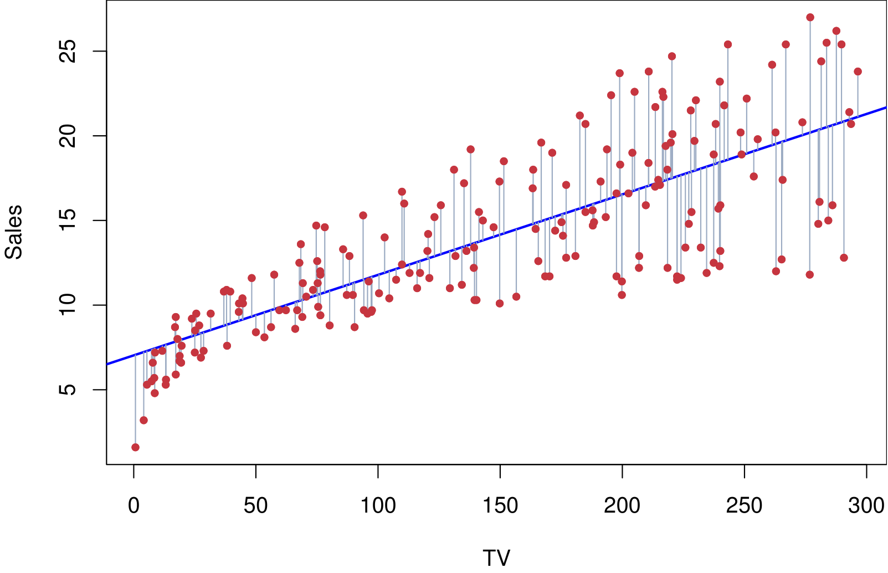
En la Figura 2, hemos calculado la RSS para varios valores de \(\beta_0\) y \(\beta_1\), usando los datos de Advertising con ventas como respuesta y TV como predictor. En cada gráfico, el punto rojo representa el par de estimaciones de mínimos cuadrados \((\hat{\beta}_0, \hat{\beta}_1)\) dado por (3.4). Estos valores minimizan claramente la RSS.
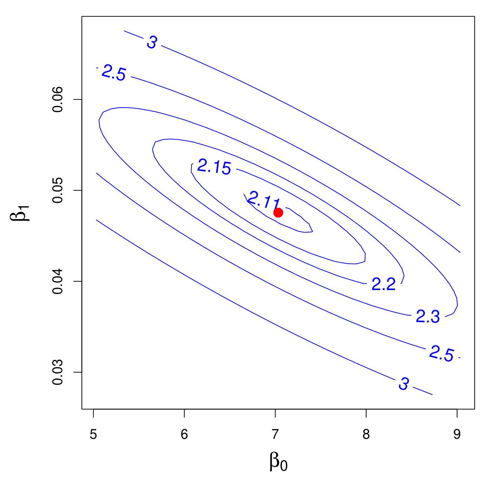
Evaluación de la Precisión de las Estimaciones de los Coeficientes
Recordemos de (2.1) que asumimos que la verdadera relación entre \(X\) e \(Y\) toma la forma \(Y = f(X) + \epsilon\) para alguna función desconocida \(f\), donde \(\epsilon\) es un término de error aleatorio con media cero. Si \(f\) se aproxima mediante una función lineal, entonces podemos escribir esta relación como
\[Y = \beta_0 + \beta_1 X + \epsilon. \tag{3.5}\]
Aquí \(\beta_0\) es el término de intercepto —es decir, el valor esperado de \(Y\) cuando \(X = 0\), y \(\beta_1\) es la pendiente —el aumento promedio en \(Y\) asociado con un aumento de una unidad en \(X\). El término de error es un cajón de sastre para lo que perdemos con este modelo simple: la verdadera relación probablemente no sea lineal, puede haber otras variables que causen variación en \(Y\), y puede haber error de medición. Típicamente asumimos que el término de error es independiente de \(X\).
El modelo dado por (3.5) define la línea de regresión poblacional, que es la mejor aproximación lineal a la verdadera relación entre \(X\) e \(Y\). Las estimaciones de coeficientes de regresión por mínimos cuadrados (3.4) caracterizan la línea de mínimos cuadrados (3.2). El panel izquierdo de la Figura 3 muestra estas dos líneas en un ejemplo simulado simple. Creamos 100 valores \(X\) aleatorios, y generamos 100 valores \(Y\) correspondientes a partir del modelo
\[Y = 2 + 3X + \epsilon, \tag{3.6}\]
donde \(\epsilon\) se generó a partir de una distribución normal con media cero. La línea roja en el panel izquierdo de la Figura 3 muestra la verdadera relación, \(f(X) = 2 + 3X\), mientras que la línea azul es la estimación de mínimos cuadrados basada en los datos observados. La verdadera relación generalmente no se conoce para datos reales, pero la línea de mínimos cuadrados siempre puede calcularse usando las estimaciones de coeficientes dadas en (3.4). En otras palabras, en aplicaciones reales, tenemos acceso a un conjunto de observaciones a partir del cual podemos calcular la línea de mínimos cuadrados; sin embargo, la línea de regresión poblacional no se observa. En el panel derecho de la Figura 3 hemos generado diez conjuntos de datos diferentes a partir del modelo dado por (3.6) y hemos trazado las diez líneas de mínimos cuadrados correspondientes. Nótese que diferentes conjuntos de datos generados a partir del mismo modelo verdadero resultan en líneas de mínimos cuadrados ligeramente diferentes, pero la línea de regresión poblacional no observada no cambia.
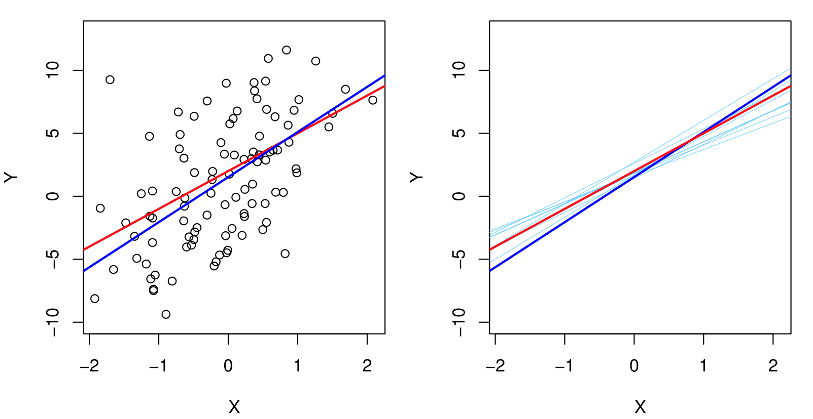
La analogía entre la regresión lineal y la estimación de la media de una variable aleatoria es apropiada y se basa en el concepto de sesgo. Si usamos la media muestral \(\hat{\mu}\) para estimar \(\mu\), esta estimación es insesgada, en el sentido de que en promedio, esperamos que \(\hat{\mu}\) sea igual a \(\mu\). ¿Qué significa esto exactamente? Significa que sobre la base de un conjunto particular de observaciones \(y_1, \ldots, y_n\), \(\hat{\mu}\) podría sobreestimar \(\mu\), y sobre la base de otro conjunto de observaciones, \(\hat{\mu}\) podría subestimar \(\mu\). Pero si pudiéramos promediar una gran cantidad de estimaciones de \(\mu\) obtenidas de una gran cantidad de conjuntos de observaciones, entonces este promedio sería exactamente igual a \(\mu\). Por lo tanto, un estimador insesgado no sobreestima ni subestima sistemáticamente el verdadero parámetro. La propiedad de insesgamiento también se cumple para las estimaciones de coeficientes de mínimos cuadrados dadas por (3.4): si estimamos \(\beta_0\) y \(\beta_1\) sobre la base de un conjunto de datos particular, entonces nuestras estimaciones no serán exactamente iguales a \(\beta_0\) y \(\beta_1\). Pero si pudiéramos promediar las estimaciones obtenidas sobre una gran cantidad de conjuntos de datos, entonces el promedio de estas estimaciones sería exactamente correcto. De hecho, podemos ver en el panel derecho de la Figura 3 que el promedio de muchas líneas de mínimos cuadrados, cada una estimada a partir de un conjunto de datos separado, está bastante cerca de la verdadera línea de regresión poblacional.
Continuamos la analogía con la estimación de la media poblacional \(\mu\) de una variable aleatoria \(Y\). Una pregunta natural es: ¿qué tan precisa es la media muestral \(\hat{\mu}\) como estimación de \(\mu\)? Hemos establecido que el promedio de \(\hat{\mu}\) sobre muchos conjuntos de datos estará muy cerca de \(\mu\), pero que una estimación única \(\hat{\mu}\) puede ser una subestimación o sobreestimación sustancial de \(\mu\). ¿Qué tan lejos estará esa estimación única de \(\hat{\mu}\)? En general, respondemos esta pregunta calculando el error estándar de \(\hat{\mu}\), escrito como \(\text{SE}(\hat{\mu})\). Tenemos la conocida fórmula
\[\text{Var}(\hat{\mu}) = \text{SE}(\hat{\mu})^2 = \frac{\sigma^2}{n}, \tag{3.7}\]
donde \(\sigma\) es la desviación estándar de cada una de las realizaciones \(y_i\) de \(Y\). En términos generales, el error estándar nos dice la cantidad promedio en que esta estimación \(\hat{\mu}\) difiere del valor real de \(\mu\). La ecuación 3.7 también nos dice cómo se reduce esta desviación con \(n\) —cuantas más observaciones tengamos, menor será el error estándar de \(\hat{\mu}\).
De manera similar, podemos preguntarnos qué tan cerca están \(\hat{\beta}_0\) y \(\hat{\beta}_1\) de los valores verdaderos \(\beta_0\) y \(\beta_1\). Para calcular los errores estándar asociados con \(\hat{\beta}_0\) y \(\hat{\beta}_1\), usamos las siguientes fórmulas:
\[\text{SE}(\hat{\beta}_0)^2 = \sigma^2\left[\frac{1}{n} + \frac{\bar{x}^2}{\sum_{i=1}^n (x_i - \bar{x})^2}\right], \quad \text{SE}(\hat{\beta}_1)^2 = \frac{\sigma^2}{\sum_{i=1}^n (x_i - \bar{x})^2}, \tag{3.8}\]
donde \(\sigma^2 = \text{Var}(\epsilon)\). Para que estas fórmulas sean estrictamente válidas, necesitamos asumir que los errores \(\epsilon_i\) para cada observación tienen varianza común \(\sigma^2\) y no están correlacionados. Esto claramente no es cierto en la Figura 1, pero la fórmula sigue siendo una buena aproximación. Nótese en la fórmula que \(\text{SE}(\hat{\beta}_1)\) es menor cuando los \(x_i\) están más dispersos; intuitivamente tenemos más apalancamiento para estimar una pendiente cuando este es el caso. También vemos que \(\text{SE}(\hat{\beta}_0)\) sería el mismo que \(\text{SE}(\hat{\mu})\) si \(\bar{x}\) fuera cero (en cuyo caso \(\hat{\beta}_0\) sería igual a \(\bar{y}\)). En general, \(\sigma^2\) no se conoce, pero puede estimarse a partir de los datos. Esta estimación de \(\sigma\) se conoce como el error estándar residual, y viene dada por la fórmula \(\text{RSE} = \sqrt{\text{RSS}/(n-2)}\). Estrictamente hablando, cuando \(\sigma^2\) se estima a partir de los datos, deberíamos escribir \(\widehat{\text{SE}}(\hat{\beta}_1)\) para indicar que se ha hecho una estimación, pero por simplicidad en la notación omitiremos este “sombrero” adicional.
Los errores estándar pueden usarse para calcular intervalos de confianza. Un intervalo de confianza del 95 % se define como un rango de valores tal que, con una probabilidad del 95 %, el rango contendrá el verdadero valor desconocido del parámetro. El rango se define en términos de límites inferior y superior calculados a partir de la muestra de datos. Un intervalo de confianza del 95 % tiene la siguiente propiedad: si tomamos muestras repetidas y construimos el intervalo de confianza para cada muestra, el 95 % de los intervalos contendrá el verdadero valor desconocido del parámetro. Para la regresión lineal, el intervalo de confianza del 95 % para \(\beta_1\) aproximadamente toma la forma
\[\hat{\beta}_1 \pm 2 \cdot \text{SE}(\hat{\beta}_1). \tag{3.9}\]
Es decir, hay aproximadamente un 95 % de probabilidad de que el intervalo
\[[\hat{\beta}_1 - 2 \cdot \text{SE}(\hat{\beta}_1),\; \hat{\beta}_1 + 2 \cdot \text{SE}(\hat{\beta}_1)] \tag{3.10}\]
contendrá el verdadero valor de \(\beta_1\). De manera similar, un intervalo de confianza para \(\beta_0\) aproximadamente toma la forma
\[\hat{\beta}_0 \pm 2 \cdot \text{SE}(\hat{\beta}_0). \tag{3.11}\]
En el caso de los datos de Advertising, el intervalo de confianza del 95 % para \(\beta_0\) es [6.130, 7.935] y el intervalo de confianza del 95 % para \(\beta_1\) es [0.042, 0.053]. Por lo tanto, podemos concluir que en ausencia de cualquier publicidad, las ventas estarán, en promedio, entre 6,130 y 7,935 unidades. Además, por cada $1,000 adicionales en publicidad en televisión, habrá un aumento promedio en las ventas de entre 42 y 53 unidades.
Los errores estándar también pueden usarse para realizar pruebas de hipótesis sobre los coeficientes. La prueba de hipótesis más común implica probar la hipótesis nula
\[H_0: \text{No hay relación entre } X \text{ e } Y \tag{3.12}\]
frente a la hipótesis alternativa
\[H_a: \text{Hay alguna relación entre } X \text{ e } Y. \tag{3.13}\]
Matemáticamente, esto corresponde a probar
\[H_0: \beta_1 = 0\]
frente a
\[H_a: \beta_1 \neq 0,\]
ya que si \(\beta_1 = 0\), entonces el modelo (3.5) se reduce a \(Y = \beta_0 + \epsilon\), y \(X\) no está asociado con \(Y\). Para probar la hipótesis nula, necesitamos determinar si \(\hat{\beta}_1\), nuestra estimación para \(\beta_1\), está suficientemente lejos de cero para que podamos estar seguros de que \(\beta_1\) es distinto de cero. ¿Qué tan lejos es suficientemente lejos? Esto depende de la precisión de \(\hat{\beta}_1\) —es decir, depende de \(\text{SE}(\hat{\beta}_1)\). Si \(\text{SE}(\hat{\beta}_1)\) es pequeño, entonces incluso valores relativamente pequeños de \(\hat{\beta}_1\) pueden proporcionar evidencia sólida de que \(\beta_1 \neq 0\), y por lo tanto de que existe una relación entre \(X\) e \(Y\). En contraste, si \(\text{SE}(\hat{\beta}_1)\) es grande, entonces \(\hat{\beta}_1\) debe ser grande en valor absoluto para que podamos rechazar la hipótesis nula. En la práctica, calculamos un estadístico \(t\), dado por
\[t = \frac{\hat{\beta}_1 - 0}{\text{SE}(\hat{\beta}_1)}, \tag{3.14}\]
que mide el número de desviaciones estándar que \(\hat{\beta}_1\) está alejado de 0. Si realmente no hay relación entre \(X\) e \(Y\), entonces esperamos que (3.14) tenga una distribución \(t\) con \(n-2\) grados de libertad. La distribución \(t\) tiene forma de campana y para valores de \(n\) mayores de aproximadamente 30 es bastante similar a la distribución normal estándar. En consecuencia, es simple calcular la probabilidad de observar cualquier número igual a \(|t|\) o mayor en valor absoluto, asumiendo \(\beta_1 = 0\). Llamamos a esta probabilidad el valor \(p\). En términos generales, interpretamos el valor \(p\) de la siguiente manera: un valor \(p\) pequeño indica que es improbable observar una asociación tan sustancial entre el predictor y la respuesta debido al azar, en ausencia de cualquier asociación real entre el predictor y la respuesta. Por lo tanto, si vemos un valor \(p\) pequeño, entonces podemos inferir que existe una asociación entre el predictor y la respuesta. Rechazamos la hipótesis nula —es decir, declaramos que existe una relación entre \(X\) e \(Y\)— si el valor \(p\) es suficientemente pequeño. Los puntos de corte típicos del valor \(p\) para rechazar la hipótesis nula son del 5 % o 1 %, aunque este tema se explorará con mucho más detalle en el Capítulo 13.
La Tabla 1 proporciona detalles del modelo de mínimos cuadrados para la regresión del número de unidades vendidas sobre el presupuesto de publicidad en TV para los datos de Advertising. Nótese que los coeficientes para \(\hat{\beta}_0\) y \(\hat{\beta}_1\) son muy grandes en relación con sus errores estándar, por lo que los estadísticos \(t\) también son grandes; las probabilidades de ver tales valores si \(H_0\) es verdadera son virtualmente cero. Por lo tanto, podemos concluir que \(\beta_0 \neq 0\) y \(\beta_1 \neq 0\).
| Coeficiente | Error estándar | Estadístico \(t\) | Valor \(p\) |
|---|---|---|---|
| Intercepto | 7.0325 | 0.4578 | 15.36 |
| TV | 0.0475 | 0.0027 | 17.67 |
Evaluación de la Precisión del Modelo
Una vez que hemos rechazado la hipótesis nula (3.12) a favor de la hipótesis alternativa (3.13), es natural querer cuantificar en qué medida el modelo se ajusta a los datos. La calidad de un ajuste de regresión lineal se evalúa típicamente usando dos cantidades relacionadas: el error estándar residual (RSE) y el estadístico \(R^2\).
La Tabla 2 muestra el RSE, el estadístico \(R^2\) y el estadístico \(F\) (que se describirá en la Sección 3.2.2) para la regresión lineal del número de unidades vendidas sobre el presupuesto de publicidad en TV.
| Cantidad | Valor |
|---|---|
| Error estándar residual | 3.26 |
| \(R^2\) | 0.612 |
| Estadístico \(F\) | 312.1 |
Error Estándar Residual
Recordemos del modelo (3.5) que a cada observación se le asocia un término de error \(\epsilon\). Debido a la presencia de estos términos de error, incluso si conociéramos la verdadera línea de regresión (es decir, incluso si \(\beta_0\) y \(\beta_1\) fueran conocidos), no podríamos predecir perfectamente \(Y\) a partir de \(X\). El RSE es una estimación de la desviación estándar de \(\epsilon\). En términos generales, es la cantidad promedio en que la respuesta se desviará de la verdadera línea de regresión. Se calcula usando la fórmula
\[\text{RSE} = \sqrt{\frac{1}{n-2}\text{RSS}} = \sqrt{\frac{1}{n-2}\sum_{i=1}^n (y_i - \hat{y}_i)^2}. \tag{3.15}\]
Nótese que la RSS se definió en la Sección 3.1.1, y viene dada por la fórmula
\[\text{RSS} = \sum_{i=1}^n (y_i - \hat{y}_i)^2. \tag{3.16}\]
En el caso de los datos de Advertising, vemos de la salida de regresión lineal en la Tabla 2 que el RSE es 3.26. En otras palabras, las ventas reales en cada mercado se desvían de la verdadera línea de regresión en aproximadamente 3,260 unidades, en promedio. Otra forma de pensar en esto es que incluso si el modelo fuera correcto y los valores verdaderos de los coeficientes desconocidos \(\beta_0\) y \(\beta_1\) se conocieran exactamente, cualquier predicción de ventas basada en la publicidad en TV aún estaría desviada por aproximadamente 3,260 unidades en promedio. Por supuesto, si 3,260 unidades es un error de predicción aceptable depende del contexto del problema. En el conjunto de datos de Advertising, el valor medio de las ventas en todos los mercados es de aproximadamente 14,000 unidades, por lo que el error porcentual es 3,260/14,000 = 23 %.
El RSE se considera una medida de la falta de ajuste del modelo (3.5) a los datos. Si las predicciones obtenidas usando el modelo están muy cerca de los valores reales del resultado —es decir, si \(\hat{y}_i \approx y_i\) para \(i = 1, \ldots, n\)— entonces (3.15) será pequeño, y podemos concluir que el modelo se ajusta muy bien a los datos. Por otro lado, si \(\hat{y}_i\) está muy lejos de \(y_i\) para una o más observaciones, entonces el RSE puede ser bastante grande, indicando que el modelo no se ajusta bien a los datos.
Estadístico \(R^2\)
El RSE proporciona una medida absoluta de falta de ajuste del modelo (3.5) a los datos. Pero dado que se mide en las unidades de \(Y\), no siempre está claro qué constituye un buen RSE. El estadístico \(R^2\) proporciona una medida alternativa de ajuste. Toma la forma de una proporción —la proporción de varianza explicada— y por lo tanto siempre toma un valor entre 0 y 1, y es independiente de la escala de \(Y\).
Para calcular \(R^2\), usamos la fórmula
\[R^2 = \frac{\text{TSS} - \text{RSS}}{\text{TSS}} = 1 - \frac{\text{RSS}}{\text{TSS}}, \tag{3.17}\]
donde \(\text{TSS} = \sum (y_i - \bar{y})^2\) es la suma total de cuadrados, y la RSS se define en (3.16). TSS mide la varianza total en la respuesta \(Y\), y puede pensarse como la cantidad de variabilidad inherente en la respuesta antes de realizar la regresión. En contraste, la RSS mide la cantidad de variabilidad que queda sin explicar después de realizar la regresión. Por lo tanto, TSS \(-\) RSS mide la cantidad de variabilidad en la respuesta que es explicada (o eliminada) al realizar la regresión, y \(R^2\) mide la proporción de variabilidad en \(Y\) que puede explicarse usando \(X\). Un estadístico \(R^2\) cercano a 1 indica que una gran proporción de la variabilidad en la respuesta es explicada por la regresión. Un número cercano a 0 indica que la regresión no explica mucha de la variabilidad en la respuesta; esto puede ocurrir porque el modelo lineal es incorrecto, o porque la varianza del error \(\sigma^2\) es alta, o ambas.
En la Tabla 2, el \(R^2\) fue 0.61, por lo que algo menos de dos tercios de la variabilidad en las ventas se explica mediante una regresión lineal sobre TV.
El estadístico \(R^2\) (3.17) tiene una ventaja interpretativa sobre el RSE (3.15), ya que a diferencia del RSE, siempre se encuentra entre 0 y 1. Sin embargo, todavía puede ser difícil determinar qué es un buen valor de \(R^2\), y en general, esto dependerá de la aplicación. Por ejemplo, en ciertos problemas de física, podemos saber que los datos provienen verdaderamente de un modelo lineal con un pequeño error residual. En este caso, esperaríamos ver un valor de \(R^2\) extremadamente cercano a 1, y un valor de \(R^2\) sustancialmente más pequeño podría indicar un problema grave con el experimento en el que se generaron los datos. Por otro lado, en aplicaciones típicas en biología, psicología, marketing y otros dominios, el modelo lineal (3.5) es en el mejor de los casos una aproximación extremadamente burda a los datos, y los errores residuales debidos a otros factores no medidos son a menudo muy grandes. En este contexto, esperaríamos que solo una proporción muy pequeña de la varianza en la respuesta sea explicada por el predictor, ¡y un valor de \(R^2\) muy por debajo de 0.1 podría ser más realista!
El estadístico \(R^2\) es una medida de la relación lineal entre \(X\) e \(Y\). Recordemos que la correlación, definida como
\[\text{Cor}(X, Y) = \frac{\sum_{i=1}^n (x_i - \bar{x})(y_i - \bar{y})}{\sqrt{\sum_{i=1}^n (x_i - \bar{x})^2}\sqrt{\sum_{i=1}^n (y_i - \bar{y})^2}}, \tag{3.18}\]
es también una medida de la relación lineal entre \(X\) e \(Y\). Esto sugiere que podríamos usar \(r = \text{Cor}(X, Y)\) en lugar de \(R^2\) para evaluar el ajuste del modelo lineal. De hecho, se puede mostrar que en el contexto de regresión lineal simple, \(R^2 = r^2\). En otras palabras, la correlación al cuadrado y el estadístico \(R^2\) son idénticos. Sin embargo, en la siguiente sección discutiremos el problema de regresión lineal múltiple, en el que usamos varios predictores simultáneamente para predecir la respuesta. El concepto de correlación entre los predictores y la respuesta no se extiende automáticamente a este contexto, ya que la correlación cuantifica la asociación entre un solo par de variables en lugar de entre un número mayor de variables. Veremos que \(R^2\) cumple este papel.
Regresión Lineal Múltiple
La regresión lineal simple es un enfoque útil para predecir una respuesta sobre la base de una única variable predictora. Sin embargo, en la práctica a menudo tenemos más de un predictor. Por ejemplo, en los datos de Advertising, hemos examinado la relación entre las ventas y la publicidad en TV. También tenemos datos sobre la cantidad de dinero gastada en publicidad en radio y en periódicos, y podemos querer saber si alguno de estos otros dos medios está asociado con las ventas. ¿Cómo podemos extender nuestro análisis de los datos de Advertising para acomodar estos dos predictores adicionales?
Una opción es ejecutar tres regresiones lineales simples separadas, cada una de las cuales usa un medio publicitario diferente como predictor. Por ejemplo, podemos ajustar una regresión lineal simple para predecir las ventas sobre la base de la cantidad gastada en anuncios de radio. Los resultados se muestran en la Tabla 3 (tabla superior). Encontramos que un aumento de $1,000 en el gasto en publicidad en radio está asociado con un aumento en las ventas de alrededor de 203 unidades. La Tabla 3 (tabla inferior) contiene los coeficientes de mínimos cuadrados para una regresión lineal simple de las ventas sobre el presupuesto de publicidad en periódicos. Un aumento de $1,000 en el presupuesto de publicidad en periódicos está asociado con un aumento en las ventas de aproximadamente 55 unidades.
| Coeficiente | Error estándar | Estadístico \(t\) | Valor \(p\) |
|---|---|---|---|
| Intercepto | 9.312 | 0.563 | 16.54 |
| radio | 0.203 | 0.020 | 9.92 |
| Coeficiente | Error estándar | Estadístico \(t\) | Valor \(p\) |
|---|---|---|---|
| Intercepto | 12.351 | 0.621 | 19.88 |
| periódico | 0.055 | 0.017 | 3.30 |
Sin embargo, el enfoque de ajustar un modelo de regresión lineal simple separado para cada predictor no es completamente satisfactorio. En primer lugar, no está claro cómo hacer una predicción única de ventas dados los tres presupuestos de medios publicitarios, ya que cada uno de los presupuestos está asociado con una ecuación de regresión separada. En segundo lugar, cada una de las tres ecuaciones de regresión ignora los otros dos medios al formar estimaciones para los coeficientes de regresión. Veremos en breve que si los presupuestos de los medios están correlacionados entre sí en los 200 mercados de nuestro conjunto de datos, entonces esto puede conducir a estimaciones muy engañosas de la asociación entre el presupuesto de cada medio y las ventas.
En lugar de ajustar un modelo de regresión lineal simple separado para cada predictor, un mejor enfoque es extender el modelo de regresión lineal simple (3.5) de modo que pueda acomodar directamente múltiples predictores. Podemos hacer esto dando a cada predictor un coeficiente de pendiente separado en un solo modelo. En general, supongamos que tenemos \(p\) predictores distintos. Entonces el modelo de regresión lineal múltiple toma la forma
\[Y = \beta_0 + \beta_1 X_1 + \beta_2 X_2 + \cdots + \beta_p X_p + \epsilon, \tag{3.19}\]
donde \(X_j\) representa el \(j\)-ésimo predictor y \(\beta_j\) cuantifica la asociación entre esa variable y la respuesta. Interpretamos \(\beta_j\) como el efecto promedio sobre \(Y\) de un aumento de una unidad en \(X_j\), manteniendo todos los demás predictores fijos. En el ejemplo de Advertising, (3.19) se convierte en
\[\text{ventas} = \beta_0 + \beta_1 \times \text{TV} + \beta_2 \times \text{radio} + \beta_3 \times \text{periódico} + \epsilon. \tag{3.20}\]
Estimación de los Coeficientes de Regresión
Como fue el caso en el contexto de regresión lineal simple, los coeficientes de regresión \(\beta_0, \beta_1, \ldots, \beta_p\) en (3.19) son desconocidos y deben estimarse. Dadas las estimaciones \(\hat{\beta}_0, \hat{\beta}_1, \ldots, \hat{\beta}_p\), podemos hacer predicciones usando la fórmula
\[\hat{y} = \hat{\beta}_0 + \hat{\beta}_1 x_1 + \hat{\beta}_2 x_2 + \cdots + \hat{\beta}_p x_p. \tag{3.21}\]
Los parámetros se estiman usando el mismo enfoque de mínimos cuadrados que vimos en el contexto de la regresión lineal simple. Elegimos \(\beta_0, \beta_1, \ldots, \beta_p\) para minimizar la suma de cuadrados residual
\[\text{RSS} = \sum_{i=1}^n (y_i - \hat{y}_i)^2 = \sum_{i=1}^n (y_i - \hat{\beta}_0 - \hat{\beta}_1 x_{i1} - \hat{\beta}_2 x_{i2} - \cdots - \hat{\beta}_p x_{ip})^2. \tag{3.22}\]
Los valores \(\hat{\beta}_0, \hat{\beta}_1, \ldots, \hat{\beta}_p\) que minimizan (3.22) son las estimaciones de coeficientes de regresión lineal múltiple por mínimos cuadrados. A diferencia de las estimaciones de regresión lineal simple dadas en (3.4), las estimaciones de coeficientes de regresión múltiple tienen formas algo complicadas que se representan más fácilmente usando álgebra matricial. Por esta razón, no las proporcionamos aquí. Cualquier paquete de software estadístico puede usarse para calcular estas estimaciones de coeficientes, y más adelante en este capítulo mostraremos cómo se puede hacer esto en Python. La Figura 4 ilustra un ejemplo del ajuste de mínimos cuadrados a un conjunto de datos pequeño con \(p = 2\) predictores.
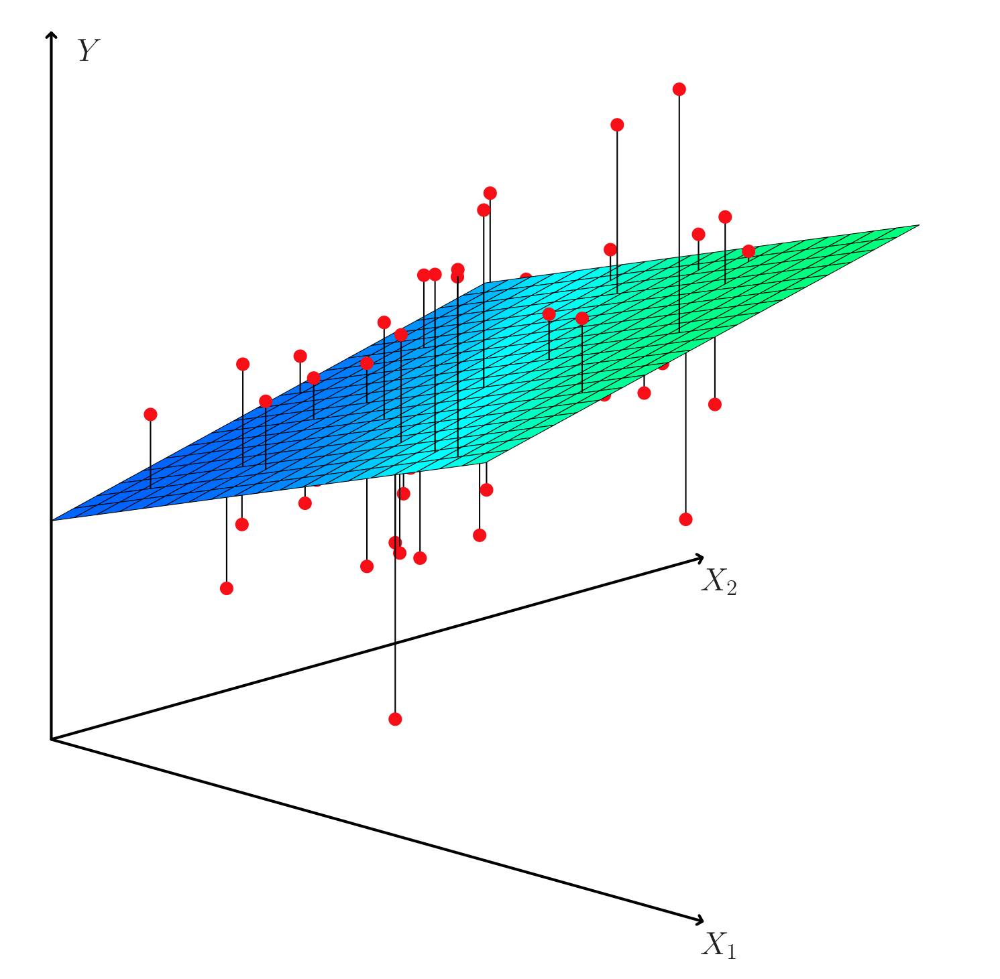
La Tabla 4 muestra las estimaciones de coeficientes de regresión múltiple cuando se usan los presupuestos de publicidad en TV, radio y periódicos para predecir las ventas del producto usando los datos de Advertising.
| Coeficiente | Error estándar | Estadístico \(t\) | Valor \(p\) |
|---|---|---|---|
| Intercepto | 2.939 | 0.3119 | 9.42 |
| TV | 0.046 | 0.0014 | 32.81 |
| radio | 0.189 | 0.0086 | 21.89 |
| periódico | -0.001 | 0.0059 | -0.18 |
Interpretamos estos resultados de la siguiente manera: para una cantidad dada de publicidad en TV y periódicos, gastar $1,000 adicionales en publicidad en radio está asociado con aproximadamente 189 unidades de ventas adicionales. Comparando estas estimaciones de coeficientes con las mostradas en las Tablas 3.1 y 3.3, notamos que las estimaciones de coeficientes de regresión múltiple para TV y radio son bastante similares a las estimaciones de coeficientes de regresión lineal simple. Sin embargo, mientras que la estimación del coeficiente de regresión para periódicos en la Tabla 3 era significativamente distinta de cero, la estimación del coeficiente para periódicos en el modelo de regresión múltiple está cerca de cero, y el valor \(p\) correspondiente ya no es significativo, con un valor alrededor de 0.86. Esto ilustra que los coeficientes de regresión simple y múltiple pueden ser bastante diferentes. Esta diferencia se deriva del hecho de que en el caso de regresión simple, el término de pendiente representa el aumento promedio en las ventas del producto asociado con un aumento de $1,000 en la publicidad en periódicos, ignorando otros predictores como TV y radio. Por el contrario, en el contexto de regresión múltiple, el coeficiente para periódicos representa el aumento promedio en las ventas del producto asociado con el aumento del gasto en periódicos en $1,000 mientras se mantienen fijos TV y radio.
¿Tiene sentido que la regresión múltiple sugiera que no hay relación entre las ventas y los periódicos, mientras que la regresión lineal simple implica lo contrario? De hecho, sí lo tiene. Considere la matriz de correlación para las tres variables predictoras y la variable respuesta, mostrada en la Tabla 5. Nótese que la correlación entre radio y periódico es 0.35. Esto indica que los mercados con alta publicidad en periódicos también tienden a tener alta publicidad en radio. Ahora supongamos que la regresión múltiple es correcta y la publicidad en periódicos no está asociada con las ventas, pero la publicidad en radio sí está asociada con las ventas. Entonces, en los mercados donde gastamos más en radio, nuestras ventas tenderán a ser más altas y, como muestra nuestra matriz de correlación, también tendemos a gastar más en publicidad en periódicos en esos mismos mercados. Por lo tanto, en una regresión lineal simple que solo examina las ventas versus los periódicos, observaremos que valores más altos de periódicos tienden a estar asociados con valores más altos de ventas, aunque la publicidad en periódicos no esté directamente asociada con las ventas. Así que la publicidad en periódicos es un sustituto de la publicidad en radio; los periódicos reciben “crédito” por la asociación entre la radio y las ventas.
| TV | radio | periódico | ventas | |
|---|---|---|---|---|
| TV | 1.0000 | 0.0548 | 0.0567 | 0.7822 |
| radio | 0.0548 | 1.0000 | 0.3541 | 0.5762 |
| periódico | 0.0567 | 0.3541 | 1.0000 | 0.2283 |
| ventas | 0.7822 | 0.5762 | 0.2283 | 1.0000 |
Este resultado ligeramente contraintuitivo es muy común en muchas situaciones de la vida real. Considere un ejemplo absurdo para ilustrar el punto. Realizar una regresión de ataques de tiburones versus ventas de helados para datos recolectados en una comunidad de playa determinada durante un período de tiempo mostraría una relación positiva, similar a la observada entre ventas y periódicos. Por supuesto, nadie ha sugerido (todavía) que los helados deberían prohibirse en las playas para reducir los ataques de tiburones. En realidad, las temperaturas más altas hacen que más personas visiten la playa, lo que a su vez resulta en más ventas de helados y más ataques de tiburones. Una regresión múltiple de ataques de tiburones sobre ventas de helados y temperatura revela que, como la intuición sugiere, las ventas de helados ya no son un predictor significativo después de ajustar por temperatura.
Algunas Preguntas Importantes
Cuando realizamos una regresión lineal múltiple, generalmente estamos interesados en responder algunas preguntas importantes.
- ¿Es útil al menos uno de los predictores \(X_1, X_2, \ldots, X_p\) para predecir la respuesta?
- ¿Ayudan todos los predictores a explicar \(Y\), o solo es útil un subconjunto de los predictores?
- ¿Qué tan bien se ajusta el modelo a los datos?
- Dado un conjunto de valores de predictores, ¿qué valor de respuesta deberíamos predecir, y qué tan precisa es nuestra predicción?
Ahora abordamos cada una de estas preguntas por turno.
Uno: ¿Existe una Relación entre la Respuesta y los Predictores?
Recordemos que en el contexto de regresión lineal simple, para determinar si existe una relación entre la respuesta y el predictor, podemos simplemente verificar si \(\beta_1 = 0\). En el contexto de regresión múltiple con \(p\) predictores, necesitamos preguntarnos si todos los coeficientes de regresión son cero, es decir, si \(\beta_1 = \beta_2 = \cdots = \beta_p = 0\). Como en la regresión lineal simple, usamos una prueba de hipótesis para responder esta pregunta. Probamos la hipótesis nula
\[H_0: \beta_1 = \beta_2 = \cdots = \beta_p = 0\]
frente a la alternativa
\[H_a: \text{al menos un } \beta_j \text{ es distinto de cero}.\]
Esta prueba de hipótesis se realiza calculando el estadístico \(F\),
\[F = \frac{(\text{TSS} - \text{RSS})/p}{\text{RSS}/(n - p - 1)}, \tag{3.23}\]
donde, como en la regresión lineal simple, \(\text{TSS} = \sum (y_i - \bar{y})^2\) y \(\text{RSS} = \sum (y_i - \hat{y}_i)^2\).
El estadístico \(F\) para el modelo de regresión lineal múltiple obtenido al regresar las ventas sobre radio, TV y periódicos se muestra en la Tabla 6. En este ejemplo, el estadístico \(F\) es 570.
| Cantidad | Valor |
|---|---|
| Error estándar residual | 1.69 |
| \(R^2\) | 0.897 |
| Estadístico \(F\) | 570 |
Dos: Decisión sobre Variables Importantes
Como se discutió en la sección anterior, el primer paso en un análisis de regresión múltiple es calcular el estadístico \(F\) y examinar el valor \(p\) asociado. Si concluimos sobre la base de ese valor \(p\) que al menos uno de los predictores está relacionado con la respuesta, entonces es natural preguntarse cuáles son los culpables.
La tarea de determinar qué predictores están asociados con la respuesta, para ajustar un solo modelo que involucre solo esos predictores, se conoce como selección de variables. Hay tres enfoques clásicos para esta tarea:
- Selección hacia adelante. Comenzamos con el modelo nulo —un modelo que contiene un intercepto pero ningún predictor. Luego ajustamos \(p\) regresiones lineales simples y agregamos al modelo nulo la variable que resulta en la RSS más baja. Este enfoque se continúa hasta que se satisface alguna regla de parada.
- Selección hacia atrás. Comenzamos con todas las variables en el modelo, y eliminamos la variable con el valor \(p\) más grande. El nuevo modelo de \((p-1)\) variables se ajusta, y se elimina la variable con el valor \(p\) más grande. Este procedimiento continúa hasta que se alcanza una regla de parada.
- Selección mixta. Esta es una combinación de selección hacia adelante y hacia atrás. Comenzamos sin variables en el modelo, y agregamos la variable que proporciona el mejor ajuste. Continuamos agregando variables una por una. Si en algún momento el valor \(p\) de una de las variables en el modelo supera cierto umbral, entonces eliminamos esa variable del modelo.
Tres: Ajuste del Modelo
Dos de las medidas numéricas más comunes del ajuste del modelo son el RSE y el \(R^2\), la fracción de varianza explicada. Estas cantidades se calculan e interpretan de la misma manera que para la regresión lineal simple.
El modelo que contiene solo TV y radio como predictores tiene un RSE de 1.681, y el modelo que también contiene periódicos como predictor tiene un RSE de 1.686 (Tabla 6). En contraste, el modelo que contiene solo TV tiene un RSE de 3.26 (Tabla 2). Esto corrobora nuestra conclusión anterior de que un modelo que usa gastos de TV y radio para predecir las ventas es mucho más preciso que uno que solo usa gastos de TV.
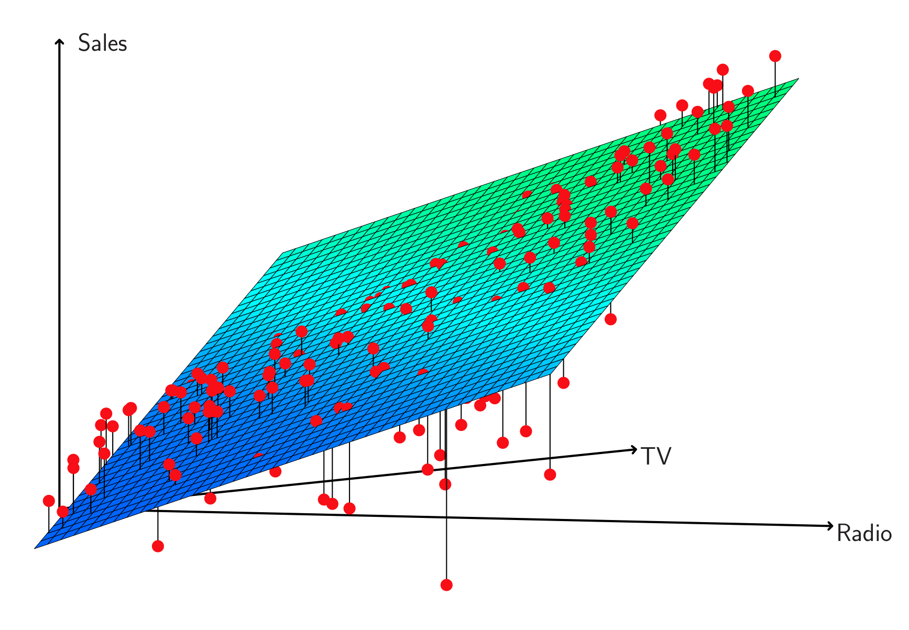
Cuatro: Predicciones
Una vez que hemos ajustado el modelo de regresión múltiple, es sencillo aplicar (3.21) para predecir la respuesta \(Y\) sobre la base de un conjunto de valores para los predictores \(X_1, X_2, \ldots, X_p\). Sin embargo, hay tres tipos de incertidumbre asociados con esta predicción.
- Las estimaciones de los coeficientes \(\hat{\beta}_0, \hat{\beta}_1, \ldots, \hat{\beta}_p\) son estimaciones para \(\beta_0, \beta_1, \ldots, \beta_p\). La inexactitud en las estimaciones de los coeficientes está relacionada con el error reducible del Capítulo 2.
- En la práctica, asumir un modelo lineal para \(f(X)\) es casi siempre una aproximación de la realidad, por lo que hay una fuente adicional de error potencialmente reducible que llamamos sesgo del modelo.
- Incluso si conociéramos \(f(X)\), el valor de la respuesta no puede predecirse perfectamente debido al error aleatorio \(\epsilon\) en el modelo (3.20).
Usamos un intervalo de confianza para cuantificar la incertidumbre que rodea las ventas promedio en un gran número de ciudades, y un intervalo de predicción para cuantificar la incertidumbre que rodea las ventas para una ciudad en particular. Los intervalos de predicción son siempre más anchos que los intervalos de confianza.
Otras Consideraciones en el Modelo de Regresión
Predictores Cualitativos
En nuestra discusión hasta ahora, hemos asumido que todas las variables en nuestro modelo de regresión lineal son cuantitativas. Pero en la práctica, esto no es necesariamente el caso; a menudo algunos predictores son cualitativos.
Por ejemplo, el conjunto de datos Credit mostrado en la Figura 6 registra variables para un número de titulares de tarjetas de crédito.
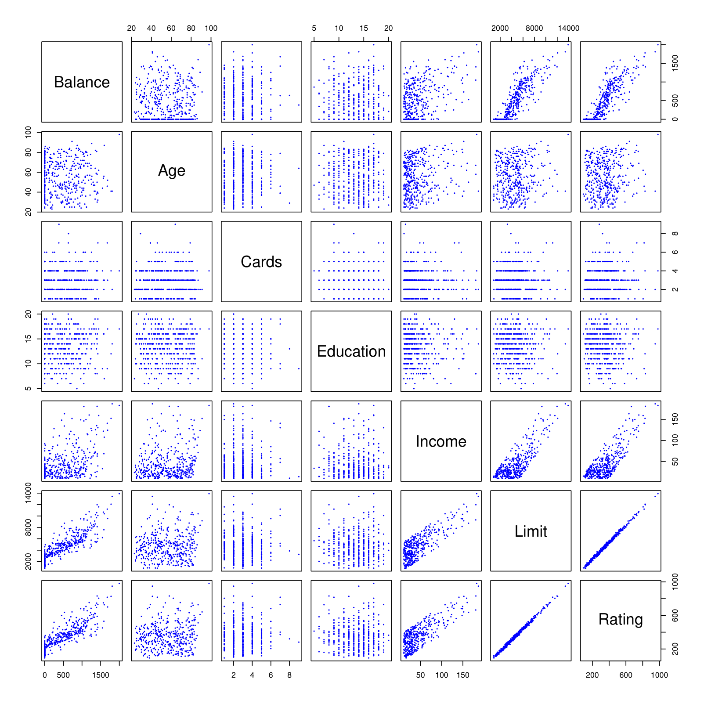
Predictores con Solo Dos Niveles
Si un predictor cualitativo (también conocido como factor) solo tiene dos niveles, o valores posibles, entonces incorporarlo en un modelo de regresión es muy simple. Simplemente creamos una variable indicadora o variable dummy que toma dos valores numéricos posibles:
\[x_i = \begin{cases} 1 & \text{si la $i$-ésima persona posee una casa}\\ 0 & \text{si la $i$-ésima persona no posee una casa}, \end{cases} \tag{3.26}\]
y usamos esta variable como predictor en la ecuación de regresión. Esto resulta en el modelo
\[y_i = \beta_0 + \beta_1 x_i + \epsilon_i = \begin{cases} \beta_0 + \beta_1 + \epsilon_i & \text{si posee una casa}\\ \beta_0 + \epsilon_i & \text{si no posee una casa}. \end{cases} \tag{3.27}\]
Ahora \(\beta_0\) puede interpretarse como el saldo promedio de la tarjeta de crédito entre aquellos que no poseen una casa, \(\beta_0 + \beta_1\) como el saldo promedio entre aquellos que sí poseen su casa, y \(\beta_1\) como la diferencia promedio en el saldo de la tarjeta de crédito entre propietarios y no propietarios.
| Coeficiente | Error estándar | Estadístico \(t\) | Valor \(p\) |
|---|---|---|---|
| Intercepto | 509.80 | 33.13 | 15.389 |
| own[Sí] | 19.73 | 46.05 | 0.429 |
Predictores Cualitativos con Más de Dos Niveles
Cuando un predictor cualitativo tiene más de dos niveles, una sola variable dummy no puede representar todos los valores posibles. En esta situación, podemos crear variables dummy adicionales. Por ejemplo, para la variable region creamos dos variables dummy:
\[x_{i1} = \begin{cases} 1 & \text{si es del Sur}\\ 0 & \text{si no es del Sur}, \end{cases} \quad x_{i2} = \begin{cases} 1 & \text{si es del Oeste}\\ 0 & \text{si no es del Oeste}. \end{cases} \tag{3.28-3.29}\]
Entonces ambas pueden usarse en la ecuación de regresión:
\[y_i = \beta_0 + \beta_1 x_{i1} + \beta_2 x_{i2} + \epsilon_i = \begin{cases} \beta_0 + \beta_1 + \epsilon_i & \text{si es del Sur}\\ \beta_0 + \beta_2 + \epsilon_i & \text{si es del Oeste}\\ \beta_0 + \epsilon_i & \text{si es del Este}. \end{cases} \tag{3.30}\]
| Coeficiente | Error estándar | Estadístico \(t\) | Valor \(p\) |
|---|---|---|---|
| Intercepto | 531.00 | 46.32 | 11.464 |
| region[Sur] | -12.50 | 56.68 | -0.221 |
| region[Oeste] | -18.69 | 65.02 | -0.287 |
Extensiones del Modelo Lineal
El modelo de regresión lineal estándar (3.19) hace varios supuestos altamente restrictivos que a menudo se violan en la práctica. Dos de los supuestos más importantes establecen que la relación entre los predictores y la respuesta es aditiva y lineal.
Eliminación del Supuesto Aditivo
En nuestro análisis anterior de los datos de Advertising, concluimos que tanto TV como radio parecen estar asociados con las ventas. Los modelos lineales asumieron que el efecto sobre las ventas de aumentar un medio publicitario es independiente de la cantidad gastada en los otros medios.
Una forma de extender el modelo es incluir un término de interacción, construido calculando el producto de \(X_1\) y \(X_2\):
\[Y = \beta_0 + \beta_1 X_1 + \beta_2 X_2 + \beta_3 X_1 X_2 + \epsilon. \tag{3.31}\]
En el ejemplo de Advertising:
\[\text{ventas} = \beta_0 + \beta_1 \times \text{TV} + \beta_2 \times \text{radio} + \beta_3 \times (\text{radio} \times \text{TV}) + \epsilon. \tag{3.33}\]
| Coeficiente | Error estándar | Estadístico \(t\) | Valor \(p\) |
|---|---|---|---|
| Intercepto | 6.7502 | 0.248 | 27.23 |
| TV | 0.0191 | 0.002 | 12.70 |
| radio | 0.0289 | 0.009 | 3.24 |
| TV\(\times\)radio | 0.0011 | 0.000 | 20.73 |
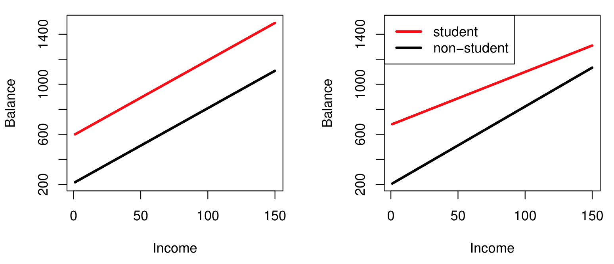
Relaciones No Lineales
Considere la Figura 8, en la que se muestra el mpg (millas por galón) versus horsepower para varios autos en el conjunto de datos Auto.
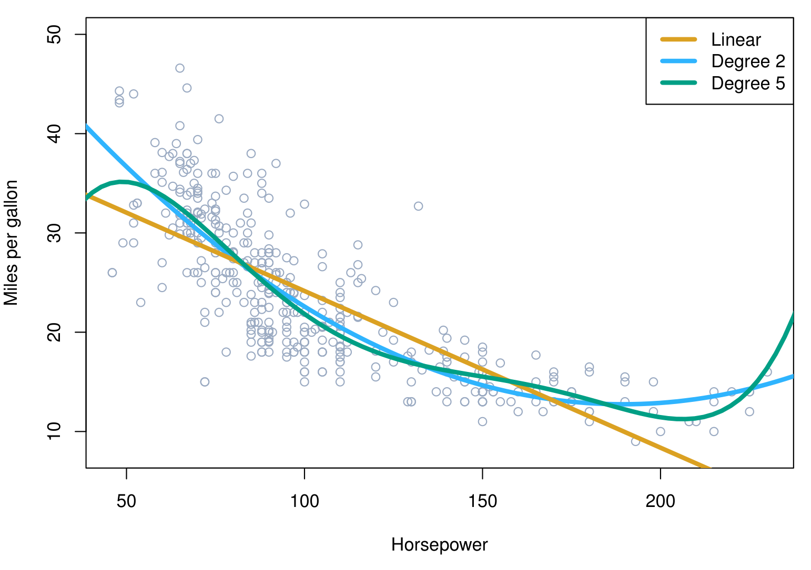
Un enfoque para incorporar asociaciones no lineales es usar regresión polinomial:
\[\text{mpg} = \beta_0 + \beta_1 \times \text{horsepower} + \beta_2 \times \text{horsepower}^2 + \epsilon. \tag{3.36}\]
| Coeficiente | Error estándar | Estadístico \(t\) | Valor \(p\) |
|---|---|---|---|
| Intercepto | 56.9001 | 1.8004 | 31.6 |
| horsepower | -0.4662 | 0.0311 | -15.0 |
| horsepower\(^2\) | 0.0012 | 0.0001 | 10.1 |
Problemas Potenciales
Cuando ajustamos un modelo de regresión lineal a un conjunto de datos particular, pueden ocurrir muchos problemas. Los más comunes son:
- No linealidad de las relaciones respuesta-predictor.
- Correlación de los términos de error.
- Varianza no constante de los términos de error.
- Valores atípicos.
- Puntos de alto apalancamiento.
- Colinealidad.
1. No Linealidad de los Datos
Los gráficos de residuales son una herramienta gráfica útil para identificar no linealidad.
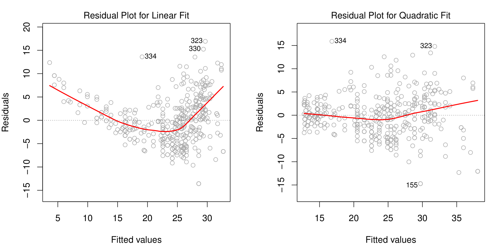
2. Correlación de los Términos de Error
Un supuesto importante del modelo de regresión lineal es que los términos de error no están correlacionados. Si hay correlación, los errores estándar estimados tenderán a subestimar los errores estándar verdaderos.
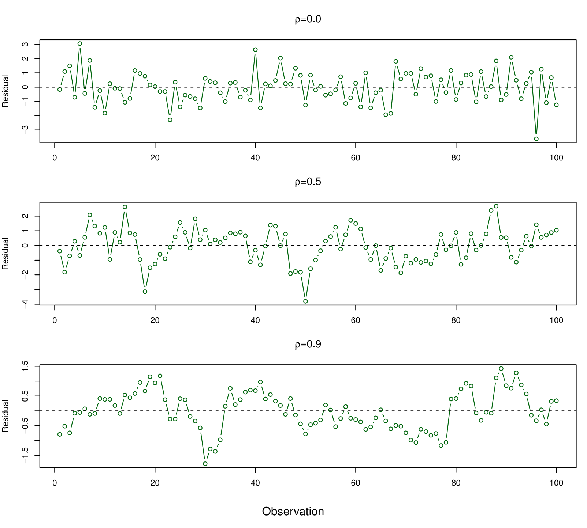
3. Varianza No Constante de los Términos de Error
Otro supuesto importante es que los términos de error tienen una varianza constante. La heterocedasticidad puede identificarse por una forma de embudo en el gráfico de residuales. Una posible solución es transformar la respuesta \(Y\) usando una función cóncava como \(\log Y\) o \(\sqrt{Y}\).
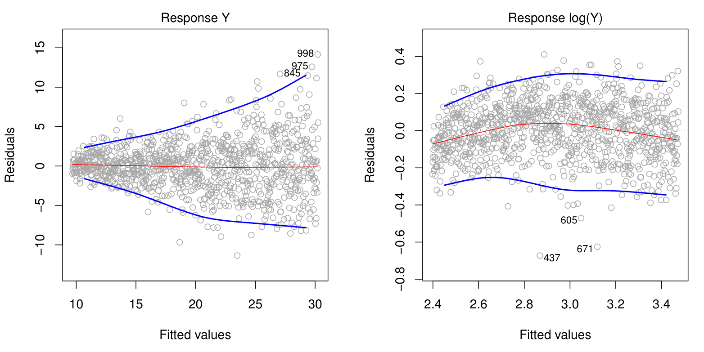
4. Valores Atípicos
Un valor atípico es un punto para el cual \(y_i\) está lejos del valor predicho por el modelo.
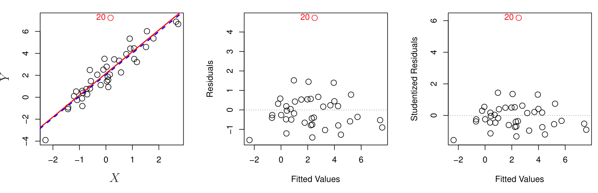
5. Puntos de Alto Apalancamiento
Las observaciones con alto apalancamiento tienen un valor inusual para \(x_i\).
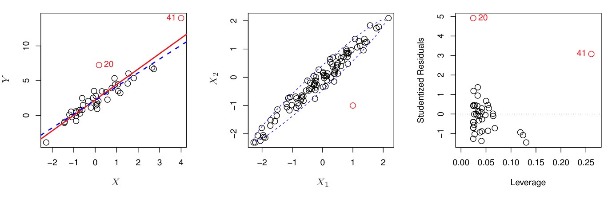
6. Colinealidad
La colinealidad se refiere a la situación en la que dos o más variables predictoras están estrechamente relacionadas entre sí.
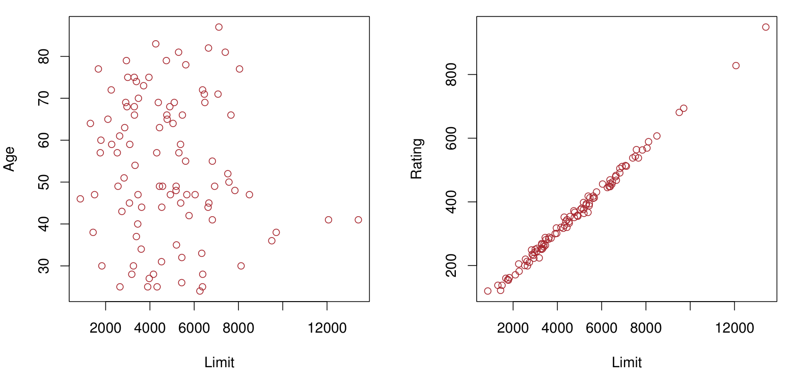
La Figura 15 ilustra algunas de las dificultades que pueden resultar de la colinealidad. El panel izquierdo muestra un gráfico de contorno de la RSS para la regresión de balance sobre limit y age. El panel derecho muestra la RSS para la regresión de balance sobre rating y limit, que están altamente correlacionados.
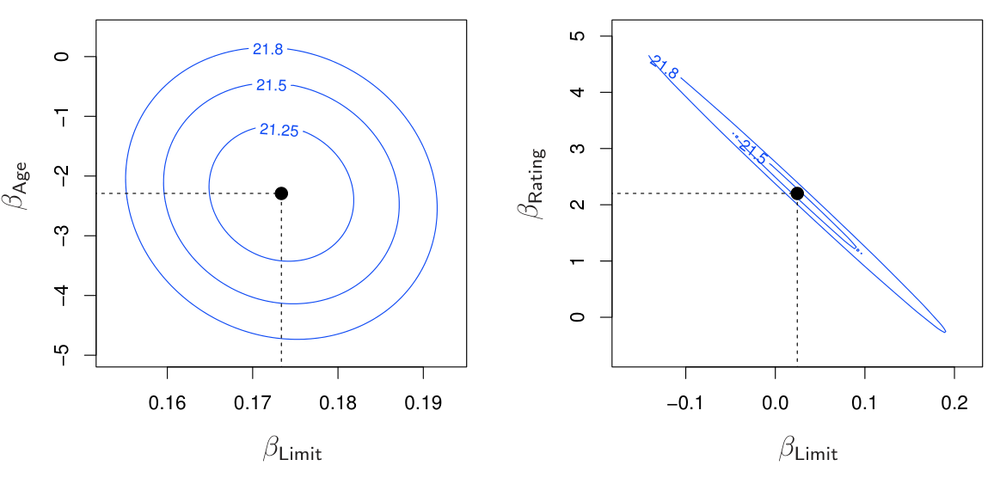
Un VIF que excede 5 o 10 indica una cantidad problemática de colinealidad. En los datos de Credit, una regresión de balance sobre age, rating y limit produce VIF de 1.01, 160.67 y 160.59.
| Coeficiente | Error estándar | Estadístico \(t\) | Valor \(p\) | |
|---|---|---|---|---|
| Modelo 1 | Intercepto | -173.411 | 43.828 | -3.957 |
| age | -2.292 | 0.672 | -3.407 | |
| limit | 0.173 | 0.005 | 34.496 | |
| Modelo 2 | Intercepto | -377.537 | 45.254 | -8.343 |
| rating | 2.202 | 0.952 | 2.312 | |
| limit | 0.025 | 0.064 | 0.384 |
El Plan de Marketing
Ahora volvemos brevemente a las siete preguntas sobre los datos de Advertising que nos propusimos responder al comienzo de este capítulo.
¿Existe una relación entre las ventas y el presupuesto de publicidad? Esta pregunta puede responderse ajustando un modelo de regresión múltiple de ventas sobre TV, radio y periódico, y probando la hipótesis \(H_0: \beta_{\text{TV}} = \beta_{\text{radio}} = \beta_{\text{periódico}} = 0\). En este caso, el valor \(p\) correspondiente al estadístico \(F\) es muy bajo, indicando evidencia clara de una relación entre la publicidad y las ventas.
¿Qué tan fuerte es la relación? El RSE es 1.69 unidades mientras que el valor medio de la respuesta es 14.022, indicando un error porcentual de aproximadamente 12 %. Los predictores explican casi el 90 % de la varianza en las ventas (\(R^2 = 0.897\)).
¿Qué medios están asociados con las ventas? Los valores \(p\) para TV y radio son bajos, pero el valor \(p\) para periódicos no lo es. Esto sugiere que solo TV y radio están relacionados con las ventas.
¿Qué tan grande es la asociación entre cada medio y las ventas? Los intervalos de confianza del 95 % son (0.043, 0.049) para TV, (0.172, 0.206) para radio y (-0.013, 0.011) para periódicos.
¿Con qué precisión podemos predecir las ventas futuras? La respuesta puede predecirse usando (3.21). La precisión depende de si deseamos predecir una respuesta individual o la respuesta promedio.
¿La relación es lineal? Los gráficos de residuales pueden usarse para identificar no linealidad.
¿Existe sinergia entre los medios de publicidad? Incluir un término de interacción en el modelo resulta en un aumento sustancial en \(R^2\), de alrededor del 90 % a casi el 97 %.
Comparación de la Regresión Lineal con \(K\)-Vecinos Más Cercanos
La regresión lineal es un ejemplo de un enfoque paramétrico porque asume una forma funcional lineal para \(f(X)\). Los métodos paramétricos tienen varias ventajas: a menudo son fáciles de ajustar, los coeficientes tienen interpretaciones simples y las pruebas de significancia estadística pueden realizarse fácilmente. Sin embargo, tienen la desventaja de hacer supuestos fuertes sobre la forma de \(f(X)\).
En contraste, los métodos no paramétricos no asumen explícitamente una forma paramétrica para \(f(X)\). Un método no paramétrico simple y bien conocido es la regresión de \(K\)-vecinos más cercanos (KNN). Dado un valor para \(K\) y un punto de predicción \(x_0\), KNN identifica las \(K\) observaciones de entrenamiento más cercanas a \(x_0\) y estima \(f(x_0)\) usando el promedio de todas las respuestas de entrenamiento en esa vecindad:
\[\hat{f}(x_0) = \frac{1}{K}\sum_{x_i \in N_0} y_i.\]
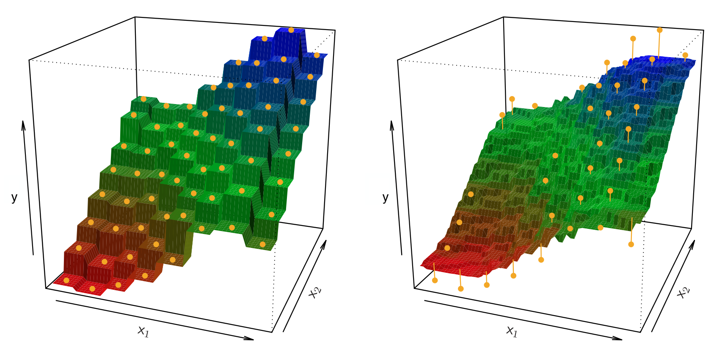
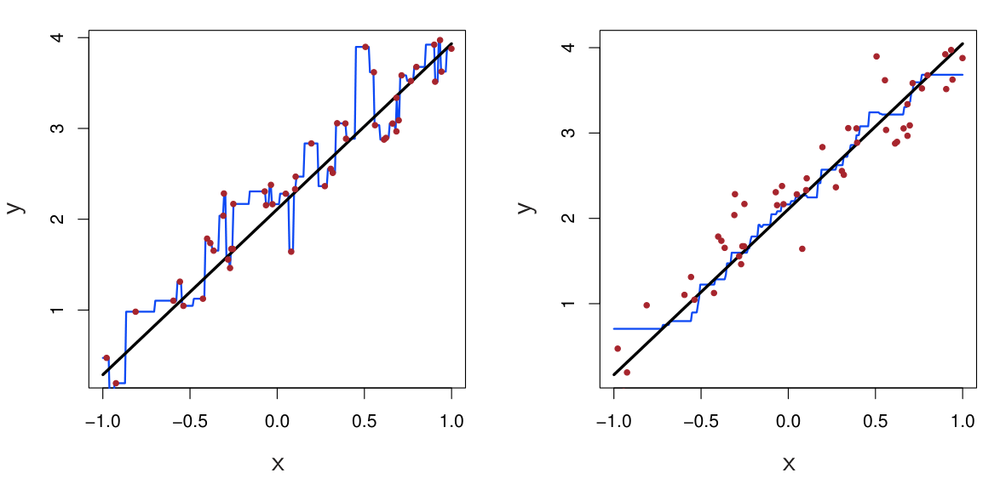
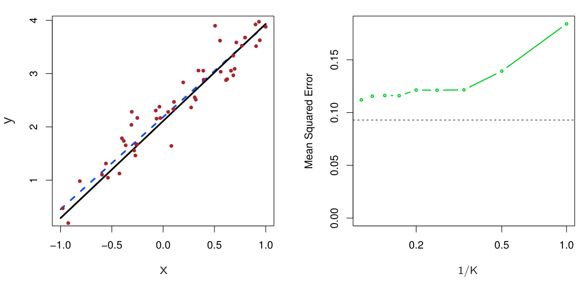
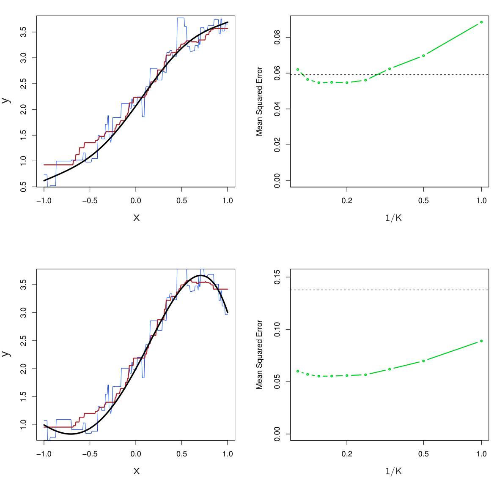
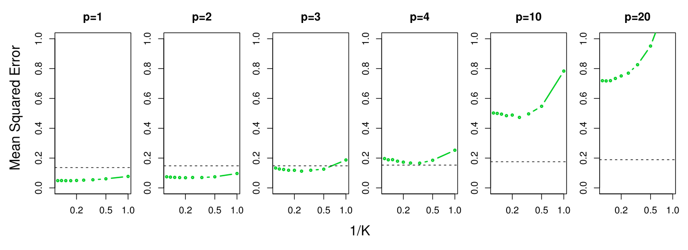
Laboratorio
Los laboratorios con el código completo de este capítulo están disponibles en el sitio oficial del libro: statlearning.com. También puedes acceder a los notebooks en el repositorio oficial de ISLP: ISLP en GitHub.